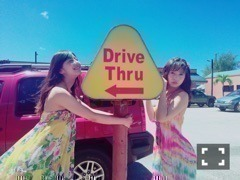

| 2016/09 10 Sat | 斎藤ちはる 肉まんから進化した姿。(´>∀<｀)ゝ |
ちはるーむへようこそ！
何度目の青空か？が一番好き、
ちーちゃんが踊ってるところを見れるのが
嬉しいよ、って
言ってくれてありがとう。
私の大切な曲。
ずっと応援してるよ。
側にいるよ。って
言ってくれてありがとう。
私の大切な方々。
こうしたら良いと思うよ。って
言ってくれてありがとう。
私の大切なアドバイス。
悔しい気持ちなのはちーちゃんだけじゃないよ
るーむめいともそう思ってるよ。って
言ってくれてありがとう。
私の大切な心の支え。
大切な方々やものに囲まれて私は幸せ。
頑張ろう、って思える。
ちょっとそろそろ諦めたら？って
思われても諦めてやんないぞ。
って気持ちにもなれる。
負けたくない。
こんな肉まんみたいな顔してた私よりも
成長した私でまた選抜に入りたい。
肉まん。。
みなさんいつもありがとう。
-------------------------♡
夏の終わりを感じる今日この頃。
今年は暑い！夏〜っていうのを
例年に比べてあんまり感じられなかった
気がするから、
私はグアムの夏を思い出す。

Drive Thru♡
この場所で撮った写真沢山あるから
また載せると思う(｡･o･｡)ﾉ！
年下組で荒野で制服着て撮影のとき。
まあや(﹡ˆ ˆ﹡)
カラフルな日傘？パラソル！
太陽と空と雲。
川後が撮ってくれたお気に入りの写真♡
皆さんはどの写真がお気に入り？
\( ˆoˆ )/
-------------------------♡
♬ ChihaMusic
「sister」back numberさん
コメントで何名かがたまたま
この曲がちーちゃんにぴったりだから
改めて聞いてみて！って言ってくださり
聞いてみたら本当にぴったりで
思わずふっと笑みがこぼれたよ。
"負けないで 君が瞬きで隠した痛みを
その思いを ああ 僕は知っているから"
の部分が大好き。
一見爽やかな曲かと思いきや
胸にどしっと響く歌詞。
素敵だな〜
私最近、
より自分のこと晴れ女だって
思うことが増えた！
全然雨に濡れず。
外に出かけても傘いらず。
帰路でも雨に濡れず。
降水確率80%だったらしい夢の国でも降らず。
凄いかも...！！♪笑
おやすみ〜
斎藤ちはる